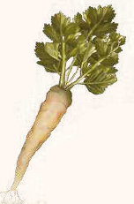

Vom Aussehen her ähnelt Joruga der Selleriestaude. Die Wurzel der in Wäldern und Wiesen des nördlichen Aventuriens wachsenden Heilplanze hat eine vorbeugende Wirkung gegen zahlreiche Fiebererkrankungen.

Suchschwierigkeit: -4
Bestimmungsschwierigkeit: -3
Anwendungen: 1/1/2/2/3/3
Wirkung:
Roh:
Berührung: keine
Einatmung: keine
Verzehr: Die unbehandelte Jorugawurzel ist unverdaulich und verursacht Durchfall.
Wird sie zu einem Fiebersaft weiterverarbeitet, kann sie bei Schwarzer Wut und Tollwut helfen.
Die Einnahme einer Dosis Joruga-Öl schützt für 4 Monate vor einer Infektion mit Schwarzer Wut.
Gegen eine Tollwutinfektion wirkt dieses Mittel jedoch nicht.
Wird die dreifache Menge binnen einem Tag nach einer Infektion eingenommen, senkt das die Infektionswahrscheinlichkeit auf 5% (1 auf W20) bei Schwarzer Wut bzw. auf 20% (1-4 auf W20) bei Tollwut.
Bei Schlachtfeldieber wird die Dauer der Krankheit um 2 Tage verkürzt, wenn ein alkoholischer Sud aus Joruga und Gulmond eingenommen wird.
Verarbeitet: noch keine Rezepte bekannt
Preis: 7 / 21 Silbertaler
Rezepte:
noch keine bekannt
Haltbarkeit:
Roh: siehe Haltbarmachung